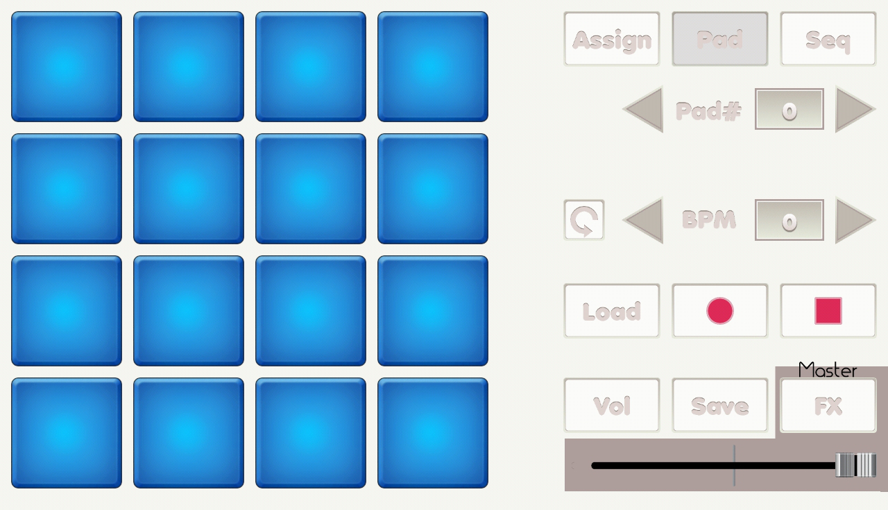

{% include JB/setup %}
Pad screen

- Pads: play sound.
- Assign button: change it to assign mode.
- Seq button: change it to sequence mode.
- Pad# arrows: disabled.
- BPM arrows: disabled.
- Loop button: enable loop mode, tap a pad to toggle loop mode.
- Load button: read you to load project screen.
- Rec button: start recording.
- Rec stop button: stop recording.
- Vol button: read you to volume screen.
- Save button: read you to save screen.
- FX button: read you to filter screen.
- Volume slider: master volume.